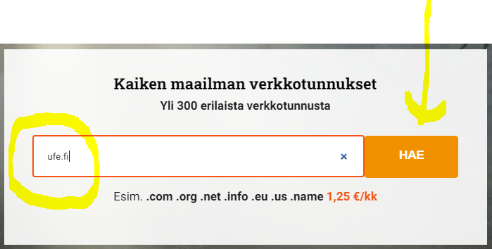
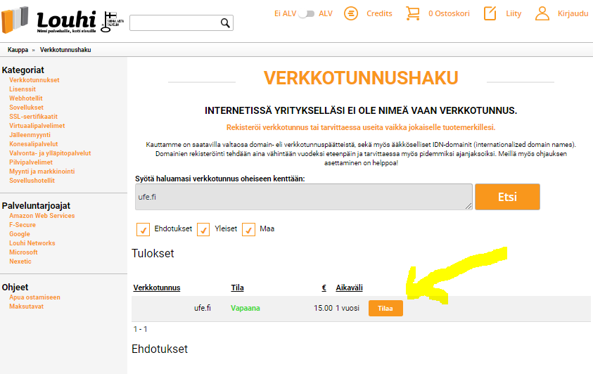
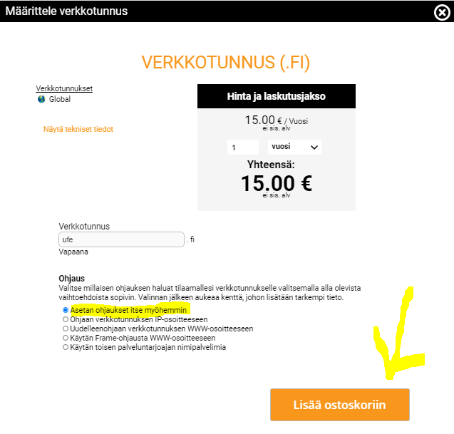
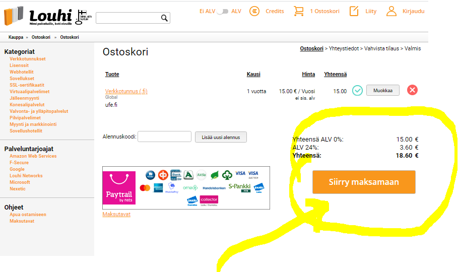
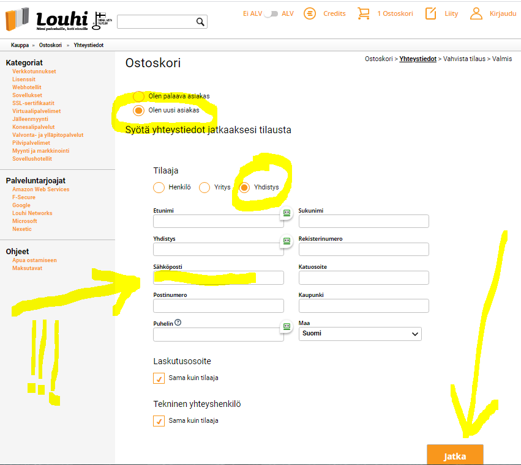

Как зарегистрировать домен в зоне fi
24-12-2020
Зарегистрировать домен в зоне fi не сложно, если вы проживаете в Финляндии.
Желательно иметь финский номер телефона при регистрации.
Чтобы зарегистрировать домен в зоне fi следуйте инструкции:
- Заходим на сервис регистрации доменов louhi.fi
- Вводим желаемое название домена.
- Жмем на "Поиск"

4. На открывшейся странице видим, что домен свободен. И жмем на "Заказ".

5. Далее выбираем первый пункт в списке и жмем "Добавить в корзину"

6. Далее переходим в корзину

7. Далее жмем на "Перейти к оплате"

8. Далее выбираем, что мы "новый клиент", выбираем тип предприятия и вводим свои данные.
ВНИМАНИЕ! Имейл при регистрации должен быть указан тот, который вы постоянно контролируете и никогда не потеряете к нему доступ. Это должен быть ваш постоянный имей, например на гмейле.
9. Далее жмем "Продолжить" и заканчиваем процесс регистрации. Скорее всего потребуется подтверждение имейла.
